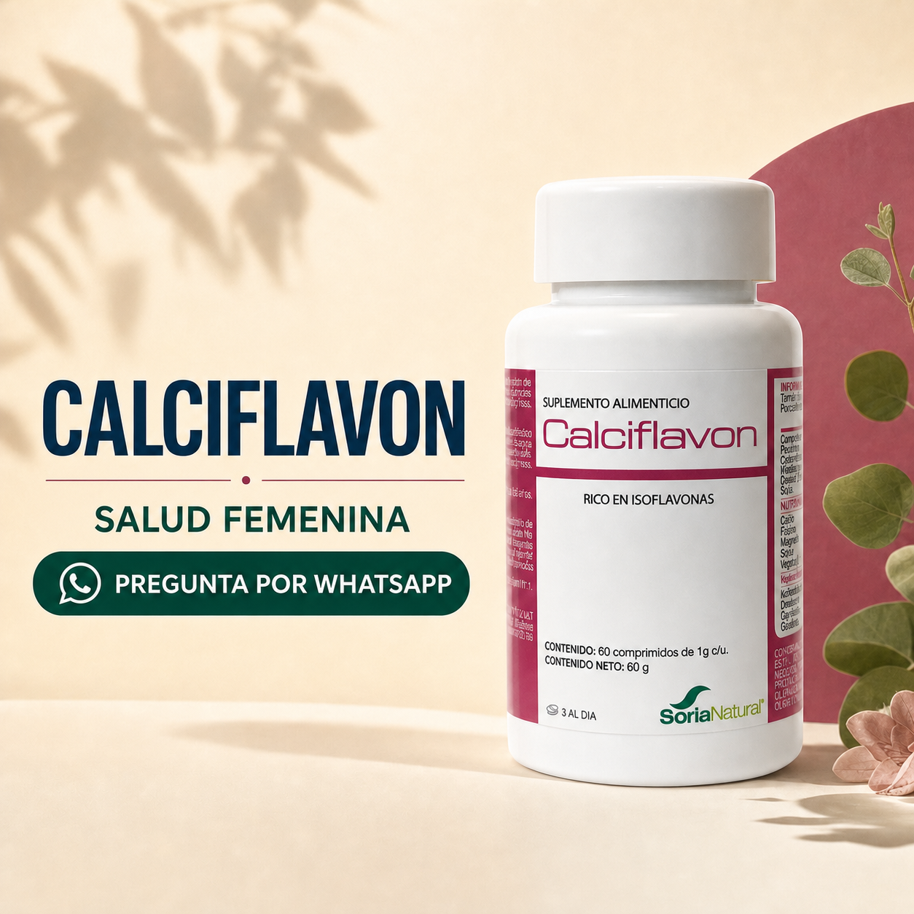
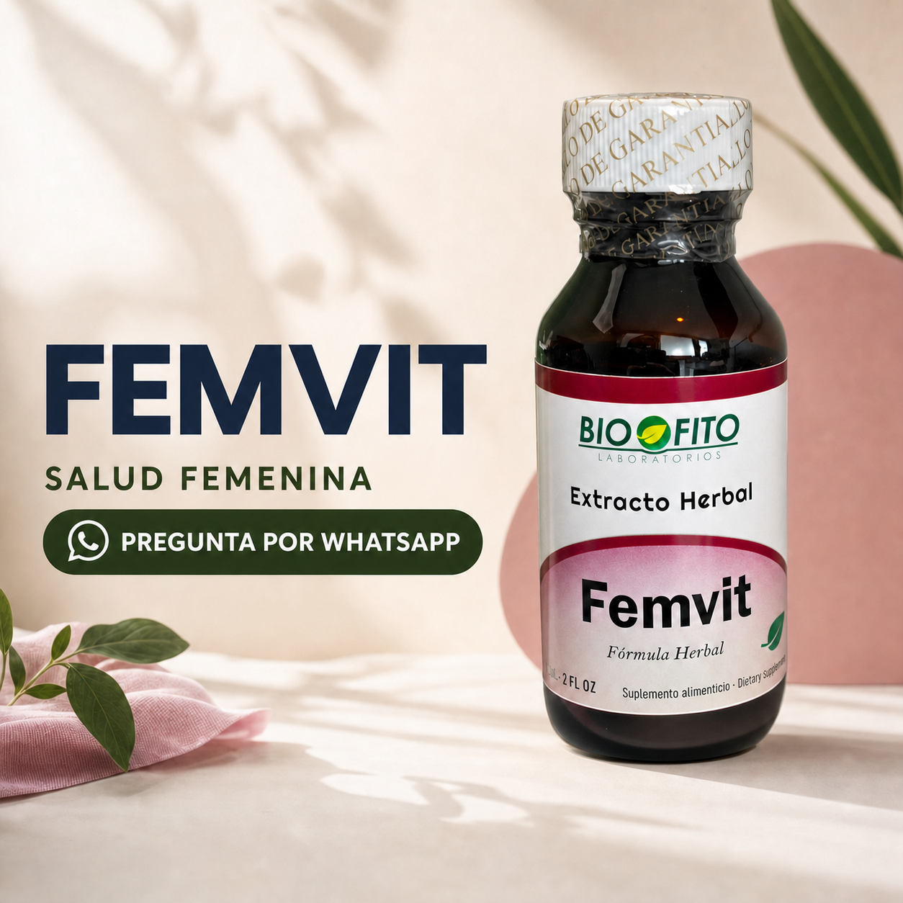

Tu Mapa
Hormonal
Una lectura práctica de cómo se está reacomodando tu cuerpo.
Los síntomas no vienen todos del mismo lugar.
Antes de leer tu mapa, lee estas señales.
Lo de hoy orienta. No sustituye una valoración médica ni convierte un síntoma en diagnóstico.
Haz tu mapa en cinco minutos.
Puntúa cada frase del 0 al 4 según cuánto la sentiste esta última semana.
Cuando el cuerpo
sube el calor.
Sofocos · sudoración nocturna · palpitaciones · empeora con desvelo o estrés.
Cuando la noche
no alcanza.
Despertares · irritabilidad · ansiedad · agotamiento mental · poca paciencia.
Cuando cambia la
estructura.
Piel seca · cansancio físico · molestias musculares o articulares · sensación de fragilidad.
Mira alrededor: no eres la única en tu zona.
Una herramienta para llevarte hoy.
Respiración pausada: baja el volumen de la reacción de estrés y del malestar asociado.
Empieza por tu zona dominante.
Calor

Sueño y ánimo

Piel y estructura
Tu primer paso puede ser específico.
El mapa no pretende definirte. Sirve para dejar de empezar desde un consejo genérico.
Tenemos un programa para trabajar este mapa a fondo: Reset Hormonal.
La Cartografía Hormonal Femenina organiza la transición, el reset y el nuevo equilibrio en una ruta que puedes volver a consultar cuando tu cuerpo cambie.
Del mapa a un sistema de mantenimiento.
Aprendes a identificar la fase, reconocer los ejes activos y ajustar tu ruta cuando tu cuerpo vuelve a cambiar.
Cartografía Hormonal
Fases, ejes y mapas de regulación para entender qué está activo en tu cuerpo.
Protocolos y botica
Fitoterapia y herramientas organizadas por fase y por necesidad.
Tu mapa de hoy es una puerta de entrada.
El programa Reset Hormonal profundiza en tu perfil, tus ejes y una ruta por fases.